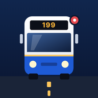

Get Bus Watch on your phone
Free. No app store, no sign-up. Takes about 10 seconds.
You've opened this inside an app (like Facebook).
Installing only works in your phone's browser.
Installing only works in your phone's browser.
Opened this from Facebook, Messenger or another app?
Those apps hide the install option. Tap below to reopen this page in your phone's browser, then follow the steps.
Open in browserIf nothing happens: tap Copy link below, open your browser yourself, and paste it into the address bar.
One tap
How to install
What you get
- Is my bus running? Live cancellations for your route and time
- Save your regular bus so it opens straight to it
- School bus finder
- Daily, weekly and monthly reliability figures
Keolis Downer Northern Beaches (Region 8), with CDC crossover routes marked. Data from Transport for NSW. Independent, not run by Keolis or Transport for NSW.
nbbuswatch.github.io